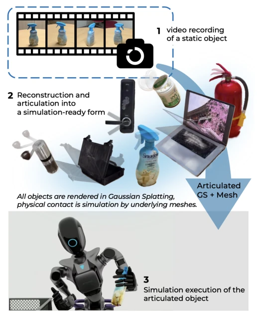
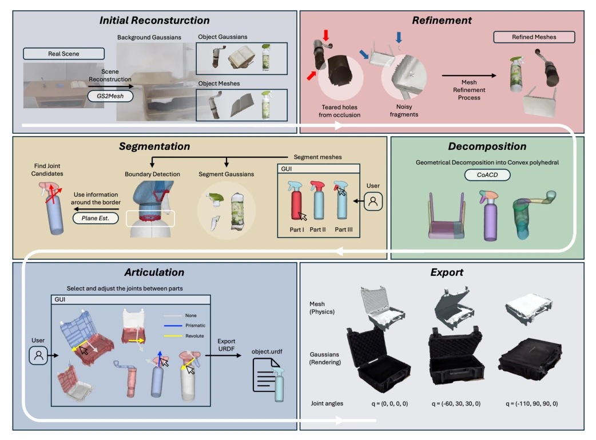
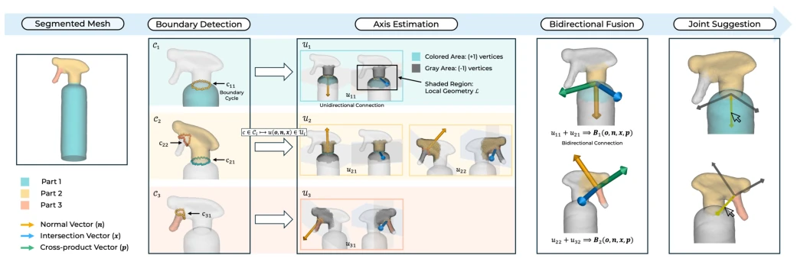
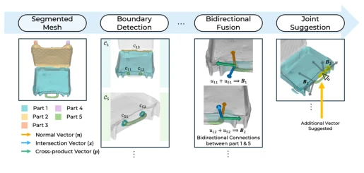
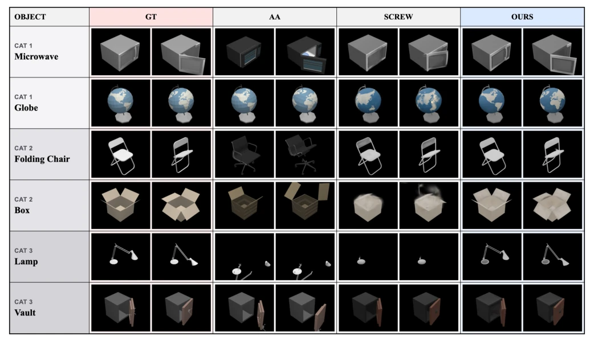
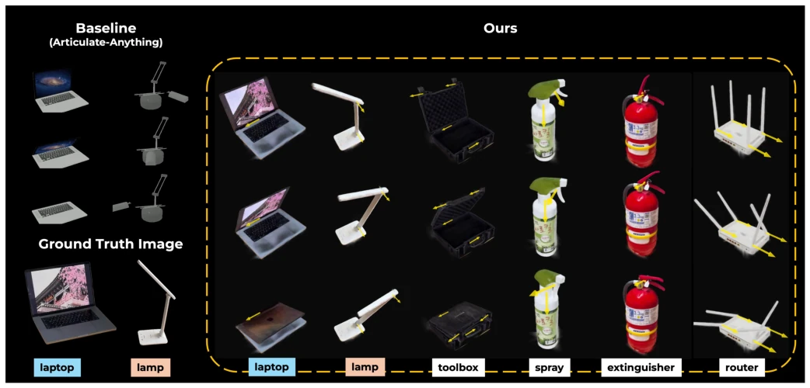
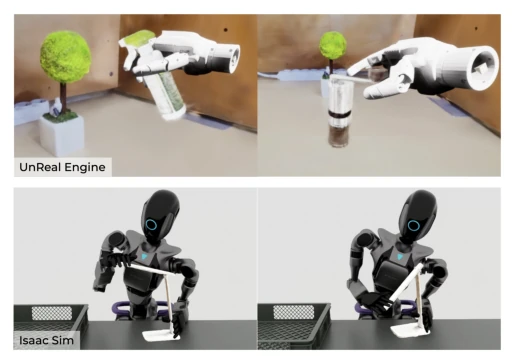

This RORA paper attempts to address the most challenging "simulation asset creation" problem in embodied intelligence using a single static video, serving as a significant boost for the "static scanning" school of thought. It employs a hybrid representation where 3DGS handles visual fidelity and Mesh handles physical collision, which sounds promising. However, the so-called "end-to-end" process is actually semi-automatic, still requiring human intervention to select joints; does this constitute a compromise of "human-in-the-loop"? Nevertheless, compared to baseline methods that require filming objects in motion, it is indeed much more convenient, particularly when handling multi-joint chain structures. The drawbacks are also obvious: glass reflections remain unsolved, a known limitation of 3DGS, and non-convex parts may not be segmented well. Overall, this is a practical tool; although not perfect, it is more reliable than VLM methods that merely make empty promises.
To bridge the sim-to-real gap in embodied intelligence, visual fidelity alone is insufficient; physical interaction is also required. Existing methods either rely on dynamic scanning (e.g., PARIS [11]), requiring multi-state object motion, which is cumbersome and yields low success rates for complex structures; or rely on VLM priors (e.g., Articulate-Anything [8]), which tend to fail on out-of-distribution objects. ScrewSplat [12] does not use depth but still requires multi-state scanning. RORA aims to address this challenge: static input + complex structures. Existing baselines often fail to isolate cascading dependencies when handling multi-joint or kinematic chain structures, resulting in joint detection failure. This paper aims to infer joints via geometric features, reduce manual intervention, and achieve rapid asset transfer from real-world scenes to simulation environments.

Fig. 1. The Conceptual overview of RORA framework. Our pipeline recon- structs real objects into simulation-ready, articulated asset. It exports hybrid representation coupling Gaussian Splatting (GS) and meshes. Users can easily import articulated object in simulation environment for robot manipulation tasks.
The overall workflow is divided into six stages: initial reconstruction, refinement, decomposition, segmentation, articulation, and export. First, GS2Mesh generates 3DGS and Mesh from the video, while SAM2 filters the background. The Mesh is processed to be watertight, then decomposed into convex fragments via the ACD algorithm; after user grouping, 3DGS is bound. The core innovation lies in the "Automatic Joint Suggestion Algorithm": 1) Boundary detection: Extract sub-component boundary rings, traverse via DFS and filter unique rings; 2) Axis estimation: For each boundary ring, utilize SVM to fit simple planar boundaries, or use the EM framework to fit multi-plane angular geometry, generating normal vectors and intersection line vectors; 3) Bidirectional fusion: Pair unidirectional connections of adjacent components, average vectors to generate bidirectional connection candidate axes; 4) Heuristic suggestions: For multi-boundary connections (e.g., toolbox handles), generate additional candidate axes at connection midpoints or centroids. Finally, a GUI allows users to confirm joint types and positions, export URDF, and register 3DGS to physical links. This semi-automatic process balances automation and accuracy, specifically designing heuristic rules for multi-boundary connections to ensure joint inference for complex topologies.

Fig. 2. Overall pipeline of our reconstruction framework. The method is composed of 6 stages. The process is semi-automated human-in-the-loop process, taking human feedback in segmentation and articulation stage

Fig. 3. Overview of the Automatic Joint Suggestion Algorithm in Articulation Stage. From the segmented mesh, boundary cycles are extracted. Considering local geometry around each boundary, unidirectional connections (normal and intersection vectors) are estimated. Best-matched unidirectional pairs are fused into bidirectional connections, adding a cross-product vector. The resulting vectors of bidirectional connections are suggested as candidate joint axes.

Fig. 4. An example of additional candidate generation in the Joint Suggestion stage, highlighted between Part 1 and Part 5. Two bidirectional connections exist between those parts, which means two physical interfaces. By rules, an additional vector connecting the two centroids is suggested as a joint candidate.
Compared against Articulate-Anything [8] and ScrewSplat [12] on the PartNet-Mobility dataset. Metrics included geometric errors (type, angle, position) and visual metrics (PSNR, SSIM, LPIPS). RORA performed best across three task categories: simple, multi-joint, and chain structures, particularly on chain structures where the angle error was only 0.849 degrees, far lower than the baseline's 62.82 degrees. Visual quality was also the highest. Real object reconstruction demonstrated texture retention capabilities. Runtime, as shown in Table III, totaled approximately 7 minutes, with human interaction only 42 seconds, efficiency comparable to fully automatic baselines. Finally, it was deployed to Unreal Engine and Isaac Sim for dexterous hand manipulation demonstrations, verifying the asset's usability in physical simulation.

Fig. 5. The rendering comparison on the PartNet-Mobility benchmark. Two representative examples are displayed for each category. For each baseline and our framework, the left image shows the object at the zero configuration, while the right image shows the articulated state adjusted for visual quality evaluation against the ground truth (GT).

Fig. 6. Qualitative comparison on real-world objects. Columns depict object motions following joint constraints, where yellow arrows indicate revolute joint axes. The two leftmost columns show the results of Articulate-Anything [8] alongside their ground truth images.

Fig. 7. The dexterous manipulation demo under the simulation. Upper two images shows the operation in Unreal Engine, Lower two images shows the operation in the Isaac Sim environment. In this experiment, the robot hand is triggering the spray, and robot hand is rotating the handle of coffee grinder.